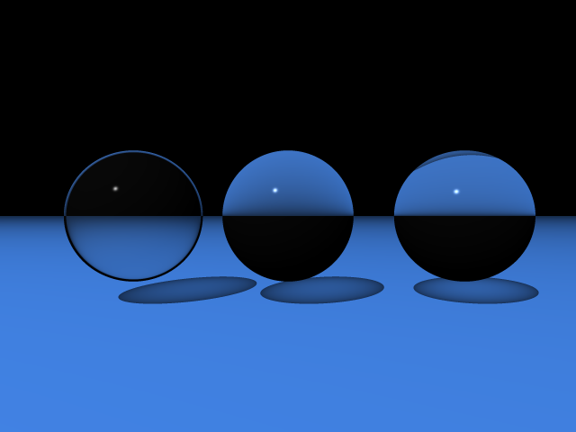

Soft Shadows:
I added functionality for parsing area lights in accordance with povray's documentation. An area light is specified by 2 perpendicular axes and the number of rows and columns of lights. When calculating whether a point was in shadow or not, I casted rays to each of the lights in the area light grid and then averaged the results. The more rows and columns, the less artifacts are present in the shadows.
Without soft shadows:
With soft shadows, rows = cols = 5:
With soft shadows, rows = cols = 15:
Caustics:
I also implemented caustics using the simplified approach of just looking at the dot product between the vector from the light to a refractive surface and the normal of the surface. The effect is increased when the dot product is closer to 1 and decreased when it's closer to 0. I also increased the effect with respect to the index of refraction of the object.
Without caustics:
With caustics:

Both Soft Shadows and Caustics:
I played around with implementing both effects in different scenarios, such as colored lights and overlapping shadows. Top left is normal, top right is just caustics, bottom left is just soft shadows, and bottom right is both soft shadows and caustics.

Sources:
Area Lights:
POV-Ray Documentation
Caustics: